Traze is a multi client online tronlike game with MQTT protocol. It aims to provide a playground for various game clients, AI game bots, and showcase of a resonable secure MQTT application, and it’s fun! You can write your own game client and participate in the game using the protocol documented on this page.
The communication with the game server works via an MQTT message broker. Depending on what you try to accomplish there are different message types your client has to support in order to participate in the game. This section contains an detailed overview of all MQTT topics and payloads that the game server supports.
The topics and their respective payloads are described thoughout this document as follows.
| Keyword | Description |
|---|---|
| Topic | the MQTT topic pattern of the topic |
| Retention | Yes if the MQTT retained flag is true for messages on this topic, No otherwise |
| Action | Subscribe if the messages are send by the game server and received by the client, Publish if it’s the other way around |
| Payload | An example JSON Payload of the message content showcasing the structure and format |
First you have to establish a connection with the traze MQTT broker. There are multiple MQTT client libraries for various programming languages. Choose the technology of your liking and establish an anonymous connection with the broker.
| Hostname:Port | Protocol | TLS Secured |
|---|---|---|
| traze.iteratec.de:1883 | MQTT | no |
| traze.iteratec.de:8883 | MQTTS | yes |
| traze.iteratec.de:8001 | WS | no |
| traze.iteratec.de:9443 | WSS | yes |
The broker is configured using trusted certificates so you do not have to download and trust any custom certificates.
You can query currently running Games. Subscribe to
Topic: traze/games
Retention: Yes
Action: Subscribe
Payload:
[
{
"name": "instanceName",
"activePlayers": 5
}
]
If you want to write your own view client or an AI pilot you can do so by parsing the MQTT repersentation of the grid. It conains the dimensions of the grid, a «rendered» representation of the grid, as well as a list of bikes with their associated properties. spawns contains a list of spawn points where new players are about to join the grid.
Topic: traze/{instanceName}/grid
Retention: Yes
Action: Subscribe
Payload:
{
"height":3,
"width":3,
"tiles":[
[ 1, 0, 0 ],
[ 1, 1, 2 ],
[ 0, 2, 2 ]
],
"bikes":[
{
"playerId":2,
"currentLocation":[1,0],
"direction":"W",
"trail":[[2,0],[2,1]]
}
],
"spawns":[[2,2]]
}
Coordinates (tuples) are represented as JSON lists of two elements e.g. [x,y]. The coordinates have to be interpreted as shown in the illustration below. The tiles can be accessed accordingly like tiles[1][0] == 1 in the example.

This diagram explains how the rendered grid representation in tiles has to be interpreted.
The grid topic is published on every server tick. (4 times a Second)
In addition to the grid you can receive a list of currently active players.
Topic: traze/{instanceName}/players
Retention: Yes
Action: Subscribe
Payload:
[
{
"id": 1,
"name": "player1",
"color": "#28BA3C",
"frags": 1,
"owned": 2
},
{
"id": 2,
"name": "player2",
"color": "#0A94FF",
"frags": 2,
"owned": 1
}
]
The player topic is published every 5 seconds.
A ticker topic informs about frags that occoured on a given instance.
Topic: traze/{instanceName}/ticker
Retention: No
Action: Subscribe
Payload:
{
"type": "frag",
"casualty": 2,
"fragger": 4
}
The types are of frag, suicide and collision. A collision occurs when two players reach the same tile on the same tick.
The ticker topic is published whenever a death of a player occurs.
Finally, a high score table is published every 10 seconds at the scores topic.
Topic: traze/{instanceName}/scores
Retention: No
Action: Subscribe
Payload:
{
"ingameNick1[id1]": 238,
"ingameNick2[id2]": 235
}
Scores are computed per 1 minute time window and published every 10 seconds.
You have to send a join request message to join the game. In return you’ll get a user token that allows you to control your bike. In this message you can choose a ingame nick name which will be visible in the players topic. You also have to provide a unique MQTT client name (MQTT Client Identifier) in order to receive your session token on your clients own topic. It is important that you specify this very client name in the MQTT connect call to the broker, otherwise you will not be able to receive messages on the traze/{instanceName}/player/{myClientName} topic due to the brokers access control list settings. In order to not be subject to a MQTT deauthentication attack you should choose a client name that can not be guessed. UUIDs are a good solution.
Please note that the MQTT client name is not the nick name which is being displayed ingame.
Topic: traze/{instanceName}/join
Retention: No
Action: Publish
Payload:
{
"name": "myIngameNick",
"mqttClientName": "myClientName"
}
If the server accepts your request you’ll receive a message communicating your initial position and a secret token to identify your steering messages. In addition you’ll get a player id (integer) from the game server. You will need the player id in the topic of the steering message.
Topic: traze/{instanceName}/player/{myClientName}
Retention: No
Action: Subscribe
Payload:
{
"id": 1337,
"name": "myIngameNick",
"secretUserToken":"de37c1bc-d0e6-4c66-aaa3-911511f43d54",
"position": [15,3]
}
Because the ingame nick is part of the topic your nickname may not include the following characters #, +, /.
You steer by giving the directions for your next turn via an MQTT message. Once you give your first direction command your game starts. Then you can steer your bike once every game cycle. If you don’t commit a course correction within the specified timeframe your light cycle will continue on it’s previous path.
Topic: traze/{instanceName}/{playerId}/steer
Retention: No
Action: Publish
Payload:
{
"course":"N",
"playerToken": "de37c1bc-d0e6-4c66-aaa3-911511f43d54"
}
The options for a course change are N, S, E or W for North, South, East and West on the grid. You also have to include the secret token in each steer message. You recieved that token with the servers response on your join request.
You may leave the game at any time.
Topic: traze/{instanceName}/{playerId}/bail
Retention: No
Action: Publish
Payload:
"playerToken": "yourSecretToken"